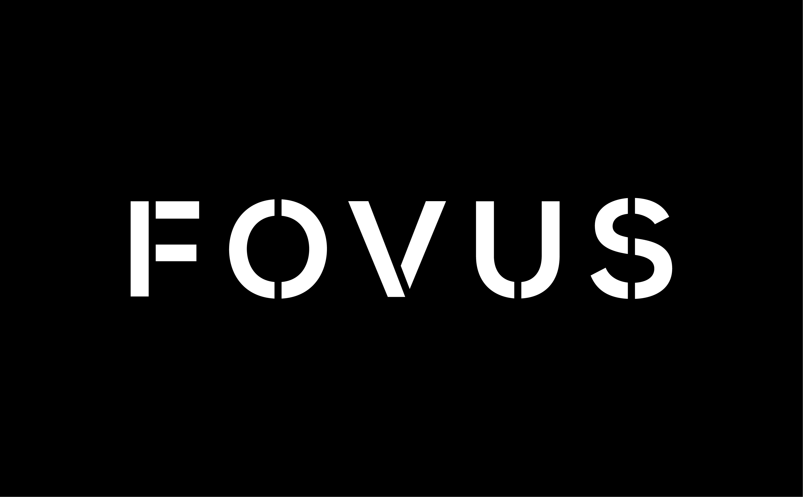
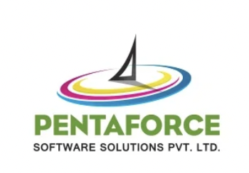

Experience

Goldman Sachs
Engineering Analyst Salt Lake City, UT
- Driving the Liquidity Risk Analytics and Reporting team to improve and monitor holistic liquidity risk measures reported to the Federal Reserve Bank and EMEA entities on LCR, NSFR and other key regulatory metrics for Commitment and Loan products.
- Establishing automated reporting methodologies using Python, Slang, Tableau, SQL to alleviate manual effort and actively engaging in attribution and analysis of large sets of data to ensure risk management.

Fovus
Software Engineering Intern Tempe, AZ
- Architected a Serverless Architecture application to execute High Performance Computing jobs using AWS Parallel cluster, AWS Lambda, EC2, S3, DynamoDB Route53 and maintained its reliability during periods of massive dynamic scale.
- Worked on providing multi-cloud support using Azure Cyclecloud, Batch using Terraform.
- Reduced the average response time by 40% through Automation of Deployment activities using AWS CDK, Cloud formation
Goldman Sachs
Engineering Summer Analyst Salt Lake City, UT
- Enhanced a web application keeping track of Liquidity Assets by delivering RESTful web services with Java Spring Boot, Maven and DB2 SQL to achieve increased customization views for users leading to rise in user engagement by 7%.
- Integrated calendar Plex APIs with Slang and Python to annotate daily projections for the Corporate Treasury team.
- Refined the UI using ReactJS, JSX, HTML and CSS. Tested features using Cypress framework achieving 80%+ code coverage.
Thunderbird School of Management, ASU
Research Aide Tempe, AZ
- Contributed to research examining changes in Marketing and Consumer behavior during the COVID-19 pandemic by building regression models and visualization dashboards using Python, Tableau, SPSS and SAS.
- Coached more than 250 students and designed coursework, assignments and quizzes for TGM 557: Global Marketing and Data Analytics under the guidance of Dr. Preethika Sainam.
W. P. Carey Business School, ASU
Teaching Assistant Tempe, AZ
- Responsible for counseling and assessment on domains like Database Management, Relational Models, Data Analytics and Visualization with Tableau for course CIS 505: Intro to Enterprise Analytics under guidance of Dr. Tamuchin McCreless.

Jio Platforms Limited (JPL AI CoE)
Data Science Intern Bangalore, India (Remote)
- Formulated binary and multi-class prediction models with Sklearn, OpenCV and evaluated them for sports (cricket) analytics.
- Applied XGBoost to increase the accuracy to 76%, used Pandas & Tableau for data visualization and PyCaret to deploy models.
- Delivered web modules for presenting telecom data using NodeJS, jQuery and MongoDB Database.

Pentaforce Printing Softwares
Software Development Intern Mumbai, India (Remote)
- Programmed a web application using PHP, MySQL, Bootstrap, HTML, CSS and used ChartJS to create data visualizations showcasing quality reports which record the efficiency and downtime for a cluster of machines.
- Incorporated Swing API for updating machine information and generating alerts.